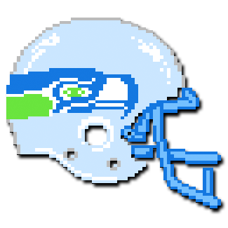
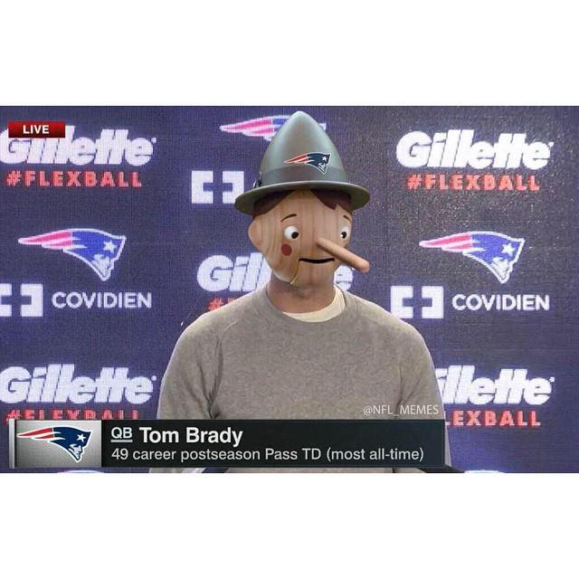
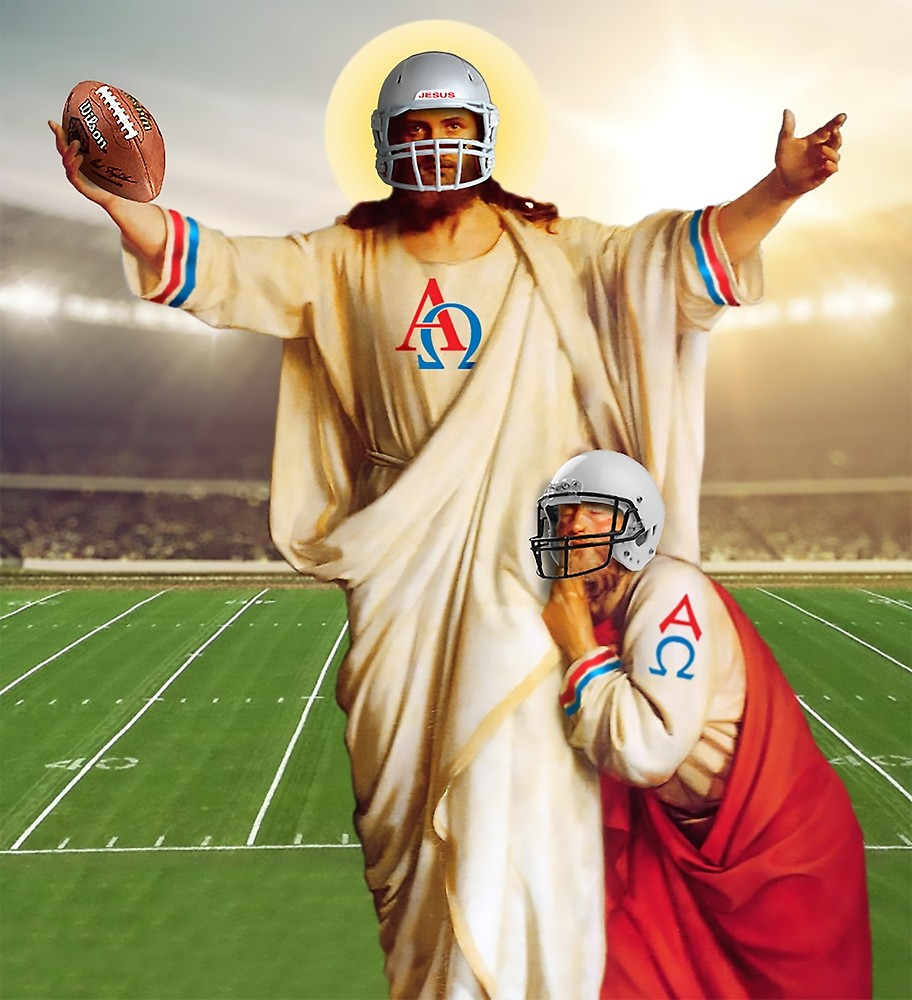
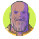
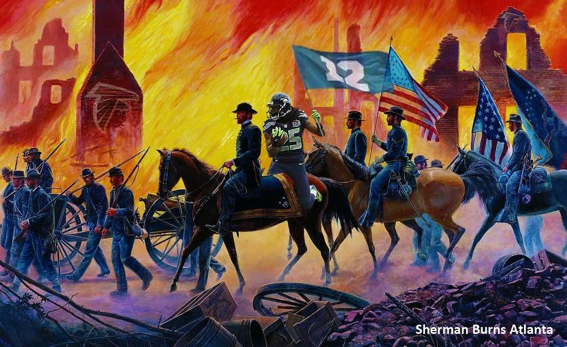
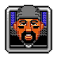

Week 1 2018 | ||||
|---|---|---|---|---|
| Rank | Team / Record | Trending | Comments | |
1 |  | Tecmo Bowl Santosh Samuel 1-0-0 | With a dominating performance across the entire team, there's no denying that Santosh is simply the best at fantasy football. At least for now.... | |
2 |  | Lights, Kamara, Action! Sonali Toppur 1-0-0 | --- | Coming off an efficient win in week 1, stones has proven herself quiet the fantasy player. Her team shows good depth although it does help to be carried by a *single* player. *cough* Alvin Kamara *cough* |
3 | Return From Wentz You Came Bhavesh Shukla 1-0-0 | --- | Despite Nik Foles putting up a measly 4 points, Bhavesh won with a comfortable lead thanks to some solid key players. Might want to use a different QB next time tho hehe | |
4 |  | Hit Me Brady One More Time Keshav Jhanwar 1-0-0 | --- | Keshav always likes to brag about how good he is at fantasy football and you know what..he's JUST OK. Plus he has Tom Brady soooo that's basically cheating. Good job getting 4th this week |
5 |  | The II'nd Coming Collin Donoghue 1-0-0 | --- | IN A THRILLING VICTORY, Collin barely edged one out with Nikhil watching hopelessly |
6 | | Julio Think You Are? Nikhil Grover 0-1-0 | --- | It sucks to lose by one point but ya DID LOL. Still, team looks solid so you get 6th |
7 |  | Thanos Snap Sarang Joshi 1-0-0 | --- | Auto-draft gets 7th. Perfectly balanced as all things should be. |
8 | | Acute Gronkitis Suma Coorg 1-0-0 | --- | Did you know that winning against the league manager is grounds for a one game suspension?! Well it isn't but I wish it was. Congrats |
9 | | Knights of the Odell Republic Govind Pillai 0-1-0 | --- | Although sporting some great performances from some players, Alvin Kamara basically rendered your team useless |
10 |  | Sherman's March To The Sea Sidd Gorti 0-1-0 | --- | League Manager?! More like League Laughing Stock. Hopefully this serves as a wake up call to the LM's team |
11 | | Inglorious Staffords Amita Jain 0-1-0 | --- | Amita might be looking for a change in her QB after last weekend. In addition it doesn't help that Delnie Walker was injured part way through the game. |
12 |  | Unleash The Beast Pratik Keni 0-1-0 | --- | After a disappointing performance Chris Carson, it was tough to keep up with Keshav's team. Doesn't help that PIT missed a kick too :p |
13 | Dakstreet Boys Jeanne Magbag 0-1-0 | --- | A step up from novice | |
14 | Captain Aaron Rodgers Khalil Somani 0-1-0 | --- | Cool picture but still a novice. | |